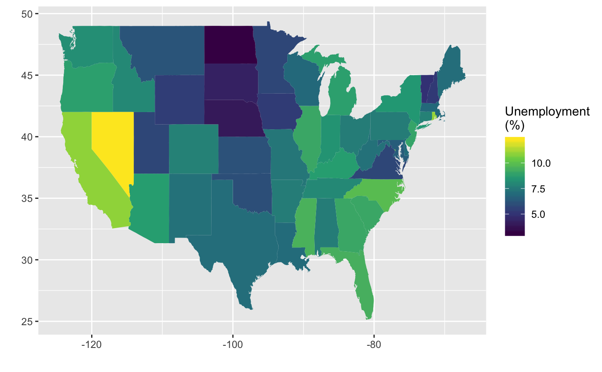
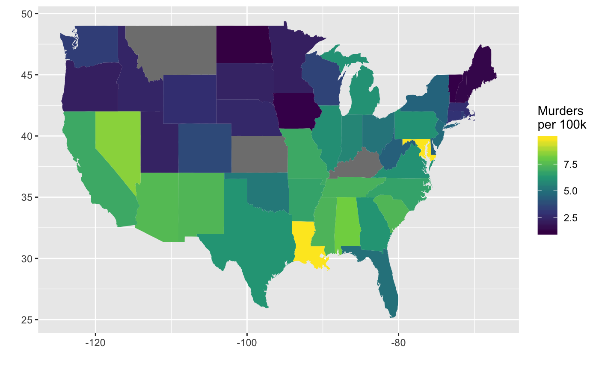
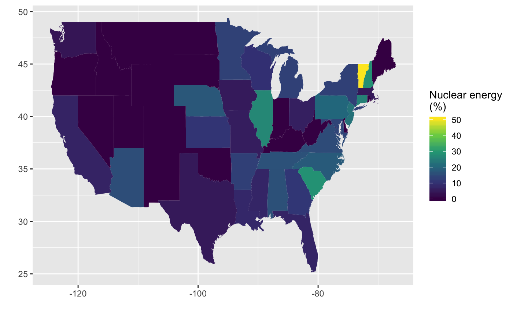

state_stats.RdInformation about each state collected from both the official US Census website and from various other sources.
state_stats
A data frame with 51 observations on the following 23 variables.
State name.
State abbreviation (e.g. "MN").
FIPS code.
Population in 2010.
Population in 2000.
Homeownership rate.
Percent of living units that are in multi-unit structures.
Average income per capita.
Median household income.
Poverty rate.
Federal spending per capita.
Land area.
Percent of population that smokes.
Murders per 100,000 people.
Robberies per 100,000.
Aggravated assaults per 100,000.
Larcenies per 100,000.
Vehicle theft per 100,000.
Percent of individuals collecting social security.
Percent of power coming from nuclear sources.
Percent of power coming from coal sources.
Traffic deaths per 100,000.
Traffic deaths per 100,000 where alcohol was not a factor.
Unemployment rate (February 2012, preliminary).
Please note that we have not validated the Infochimps data. The other data were collected directly from the corresponding websites.
US Census website (pop2010, pop2000, homeownership,
multiunits, income, med_income, poverty,
fed_spend, land_area),
http://quickfacts.census.gov/qfd/index.html
Infochimps
(murder,
robbery, agg_assault, larcent, motor_theft,
soc_sec,
coal,
nuclear),
http://www.infochimps.com (see linked pages and corresponding
downloadable data sets for original source information)
National Highway Traffic Safety Administration
(tr_deaths,
tr_deaths_no_alc), http://www-fars.nhtsa.dot.gov/
Bureau of Labor Statistics (unempl),
http://www.bls.gov/web/laus/laumstrk.htm
OpenIntro, http://www.openintro.org
library(ggplot2) library(dplyr) states_selected <- state_stats %>% mutate(region = tolower(state)) %>% select(region, unempl, murder, nuclear) states_map <- map_data("state") %>% inner_join(states_selected)#># Unemployment map ggplot(states_map, aes(map_id = region)) + geom_map(aes(fill = unempl), map = states_map) + expand_limits(x = states_map$long, y = states_map$lat) + scale_fill_viridis_c() + labs(x = "", y = "", fill = "Unemployment\n(%)")# Murder rate map states_map %>% filter(region != "district of columbia") %>% ggplot(aes(map_id = region)) + geom_map(aes(fill = murder), map = states_map) + expand_limits(x = states_map$long, y = states_map$lat) + scale_fill_viridis_c() + labs(x = "", y = "", fill = "Murders\nper 100k")# Nuclear energy map ggplot(states_map, aes(map_id = region)) + geom_map(aes(fill = nuclear), map = states_map) + expand_limits(x = states_map$long, y = states_map$lat) + scale_fill_viridis_c() + labs(x = "", y = "", fill = "Nuclear energy\n(%)")